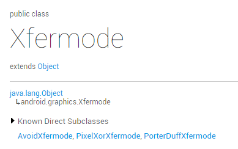
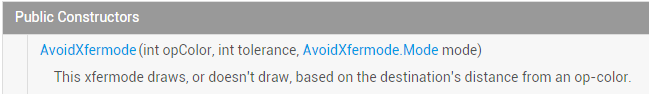
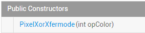

この節の紹介：
タイトルにあるこの2つのものに馴染みがあるかどうか、皆さんはどうでしょう。角丸や円形の画像を自分で実装したことがあれば、この2つの用語には馴染みがあるはずです。すぐには思い出せませんか？大丈夫です。下の画像を見たことがありますか？
PS：ネット上では、この画像は \samples\android-XX\legacy\ApiDemos\src\com\example\android\apis\graphics にあると言われています。- - しかし、実際にはありません。私のサンプルがandroid-22だからかもしれませんが、ここでは1つしか見つかりませんでしたXfermodes.javaJavaファイルだけです！ここではネットで見つけたものをそのまま貼り付けます〜
うん、話を戻すと、この画像はほとんどの方が見たことがあると思います。見たことがなくても大丈夫です。この節では、この機能について少しずつ学んでいきましょう〜。私たちが前に学んだAndroid基礎入門チュートリアル——8.3.1 三つの描画ツールクラス詳解
setXfermode(Xfermode xfermode)：図形が重なる時の処理方法を設定します。例えば、結合、交差または和集合などです。消しゴムの消去効果を作るためによく使われます！
公式ドキュメントを見てみましょう：Xfermode、彼には3人の息子がいることがわかります：

この節では、彼の最初の2人の息子について学びます〜

長男：AvoidXfermode
うん、前に学んだMaskFilterの2つのサブクラスと同じように、ハードウェアアクセラレーションをサポートしていません。そのため、API 14以上のバージョンの場合は、ハードウェアアクセラレーションを無効にしないと効果が現れません！ どうやって無効にするかは、前の節を自分で見てくださいね〜
彼が提供するコンストラクタメソッドを見てみましょう！ 公式APIドキュメント：AvoidXfermode

パラメータは3つあり、順に次のとおりです：
opColor：透明度付きの16進数の色値、例えば0x00C4C4;
tolerance：許容値。PSを学んだことがあれば、魔術棒ツールを使ったことがあるかもしれません。選択する色値の範囲を設定するものです。例えば、許容値が0の場合、真っ黒な小さな点を選択します。許容値を40に調整すると、範囲は大きな黒い領域まで広がります！ あまり理解できなくても、後でコードを書いてみればわかります！
mode：AvoidXfermodeモード、2つあります：TARGETとAVOID
モード1：AvoidXfermode.Mode.TARGET
このモードは、キャンバス上に設定した色値と異なる色があるかどうかを判断します。もしあれば、これらの領域をブラシで定義した色で染めます。他の領域は染めません！ 以下でコードを書いてデモンストレーションし、皆さんにこの許容値を感じてもらいましょう！
コード使用例：
実行結果画像：
うん、まず元画像を載せます。素材はgank.io：

次に、壁のどこかの色をカラーピッカーで取得して、簡単なViewを書いてみましょう！
PS: AndroidManifest.xmlのapplicationノードにハードウェアアクセラレーションの無効化を追加する必要があります：android:hardwareAccelerated="false"
/**
* Created by Jay on 2015/10/22 0022.
*/
public class AvoidXfermodeView1 extends View {
private Paint mPaint;
private Bitmap mBitmap;
private AvoidXfermode avoidXfermode;
public AvoidXfermodeView1(Context context) {
super(context);
init();
}
public AvoidXfermodeView1(Context context, AttributeSet attrs) {
super(context, attrs);
init();
}
public AvoidXfermodeView1(Context context, AttributeSet attrs, int defStyleAttr) {
super(context, attrs, defStyleAttr);
init();
}
private void init() {
mPaint = new Paint(Paint.ANTI_ALIAS_FLAG); //抗锯齿
avoidXfermode = new AvoidXfermode(0XFFCCD1D4, 0, AvoidXfermode.Mode.TARGET);
mBitmap = BitmapFactory.decodeResource(getResources(), R.mipmap.iv_meizi);
}
@Override
protected void onDraw(Canvas canvas) {
canvas.drawBitmap(mBitmap, 50, 50, mPaint);
mPaint.setARGB(255, 222, 83, 71);
mPaint.setXfermode(avoidXfermode);
canvas.drawRect(50, 50, 690, 1010, mPaint);
}
}
実行後の効果：

壁にあのどす赤が見えますか？効果は抜群です。ここでは許容値が役割を果たしませんでした。少し変更して、女の子の白い服をどす赤に変えましょう！
上記のAvoidXfermodeのコンストラクタの内容を次のように変更します：
avoidXfermode = new AvoidXfermode(0XFFD9E5F3, 25, AvoidXfermode.Mode.TARGET);
すると、女の子の白い服がどす赤に変わります...、罪悪感でいっぱいです...

モード2：AvoidXfermode.Mode.AVOID
上記のTARGETモードとは逆で、上記は色が同じ場合にのみ色が変わりますが、こちらは色が異なる場合に色が変わります。そして許容値も同じく逆の結果をもたらします。許容値が0の場合は、画像内のピクセルの色値が設定した色値と完全に異なる場合にのみ染色されます。許容値が最大値の255に達すると、少しでも色が異なれば染色されます！ 上記の例を簡単に変更するだけで済みます。同じくAvoidXfermodeのコンストラクタの内容を変更するだけです。次の文に変更しましょう：
avoidXfermode = new AvoidXfermode(0XFFD9E5F3,230, AvoidXfermode.Mode.AVOID);
実行結果画像：

次男：PixelXorXfermode
これはもう一つの画像合成モードで、長男よりも簡単です。そのコンストラクタは次のとおりです：
公式APIドキュメント：PixelXorXfermode

パラメータ解析：
透明度付きの16進数の色値が1つだけです。この値の役割については、アルゴリズムがあります：PixelXorXfermodeは内部で" opColor ^ src ^ dst "というXORアルゴリズムに従って計算し、不透明な(alpha = 255)色値を取得して、画像に設定します！ まあ、これはネットで調べたもので、具体的なことは私もよくわかりません。例を書いて効果を試してみましょう〜
コード例：
実行結果画像：

実装コード：
/**
* Created by Jay on 2015/10/22 0022.
*/
public class PixelXorXfermodeView1 extends View{
private Paint mPaint;
private Bitmap mBitmap;
private PixelXorXfermode pixelxorXfermode;
public PixelXorXfermodeView1(Context context) {
super(context);
init();
}
public PixelXorXfermodeView1(Context context, AttributeSet attrs) {
super(context, attrs);
init();
}
public PixelXorXfermodeView1(Context context, AttributeSet attrs, int defStyleAttr) {
super(context, attrs, defStyleAttr);
init();
}
private void init() {
mPaint = new Paint(Paint.ANTI_ALIAS_FLAG); //抗锯齿
pixelxorXfermode = new PixelXorXfermode(0XFFD9E5F3);
mBitmap = BitmapFactory.decodeResource(getResources(), R.mipmap.iv_meizi);
}
@Override
protected void onDraw(Canvas canvas) {
canvas.drawBitmap(mBitmap, 50, 50, mPaint);
mPaint.setARGB(255, 222, 83, 71);
mPaint.setXfermode(pixelxorXfermode);
canvas.drawRect(50, 50, 690, 1010, mPaint);
}
}
この節のサンプルコードのダウンロード：
この節のまとめ：
まあ、罪悪感でいっぱいです。とても綺麗な女の子だったのに、デモを書いたらこんな風になってしまいました。私を責めないでください、そうそう、言い忘れましたが、Xfermodeの長男と次男はすでに亡くなりました（非推奨）。API 16以降のバージョンで非推奨になりました。つまり、この節は全然役に立たないということです...
そうとも言えません。Apacheは4.4以降のバージョンで切り捨てられましたが、それでもHttpClientを使っている人や、このライブラリで書かれたHTTPリクエストフレームワークを使っている人はいますよ〜。もちろん、そういう人はほとんどいません！ でも、多く学ぶことは悪いことではありませんよね。次節の三男はPorterDuffXfermode時代遅れではありませんし、とても重要です。うん、安心してください、また写真を台無しにすることはありません！ うん、とりあえずこれだけです。ありがとう〜
クリックしてノートを共有
ノートはこの記事の内容の拡張である必要があります！
記事投稿は、ここをクリック
登録招待コードの取得方法
ノートを共有する前にログインする必要があります！
登録招待コードの取得方法